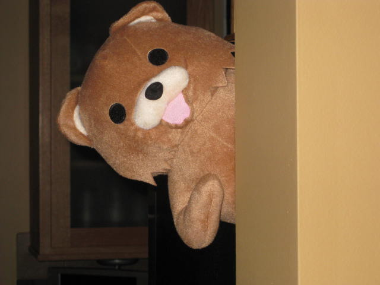

|  |
Coucou tout le monde! Je suis un gentil ourson qu'on appelle la plus part du temps Pedobear. Je vivait tranquillement dans la forêt, mais des représentants de la loi sont venus me chasser. J'ai donc erré dans les rues froide pendant longtemps, les gens me rejetant quand ils me voyaient. Mais heureusement, le refuge est venu m'adopter. Ils m'ont recueilli, le temps que je trouve enfin une famille, qui m'apprécira à ma juste valeur. Je suis sociable, je m'entends très bien avec tous les autres animaux et les humains, en particulier les enfants, mais malheureusement, j'y suis allergique. |